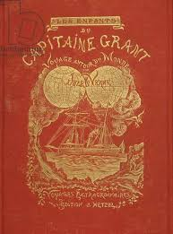

Gothikana, written by RuNyx, is a dark academia gothic romance that immerses readers in a mysterious and atmospheric setting. The novel revolves around Corvina Clemm, an outcast
who, after losing her mother, receives an unexpected admission letter to the University of Verenmore, a secluded castle rumored to be haunted and steeped in dark secrets.
Plot Summary
Corvina, seeking a fresh start, arrives at the university, only to discover a place filled with chilling tales of disappearances and suicides occurring every five years. As she
navigates her new environment, she befriends Jade, a fellow student with a troubled past at the university. However, it is her encounter with Vad Deverell, a mysterious and
enigmatic professor, that truly captivates her. Vad is shrouded in secrets and possesses a dark allure that both attracts and terrifies Corvina.
Their connection is immediate and intense, but both characters are aware of the dangers surrounding them. As Corvina begins to unravel the century-old mystery of the university,
she receives cryptic clues that may lead to the truth behind the disappearances. Simultaneously, Vad feels a strong pull towards her, complicating his efforts to keep her safe
from the castle's hidden dangers.
Themes and Style
The novel explores themes of isolation, the search for belonging, and the complexities of love intertwined with danger. The gothic atmosphere is enhanced by the castle setting,
which serves as a character in its own right, filled with shadows, secrets, and a sense of foreboding. The writing is noted for its vivid descriptions and immersive
world-building, creating a chilling yet captivating reading experience.
Reception
Gothikana has garnered attention for its intriguing premise and character dynamics, although reactions among readers have been mixed. While some praise its engaging plot and
atmospheric setting, others feel it could have benefited from more thorough character development and
resolution of its mysteries. Overall, it appeals to fans of gothic romance